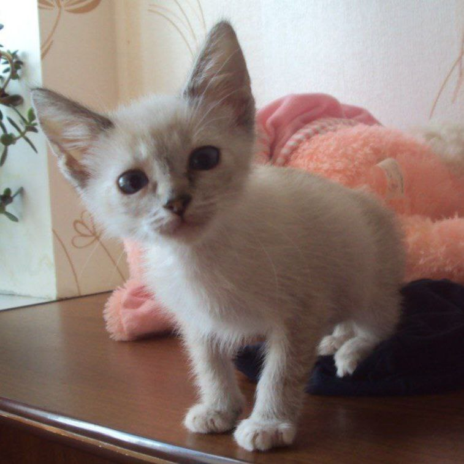

Мое детство
Вот таким я был маленьким. С первого дня жизни с хозяивами я был хулиганом, кусался и царапался (конечно, любя)
Любимые занятия
Что я люблю делать больше всего? Спать, есть и играть!


На данный момент мне 9 лет и я стал скуфом, но я до сих пор весело бегаю за игрушкой-рыбкой и кусаю хозяев за ноги 😎